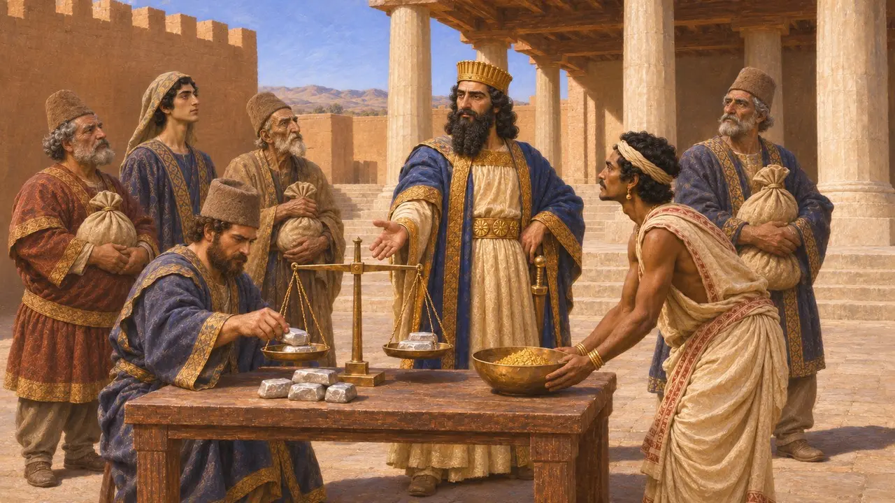
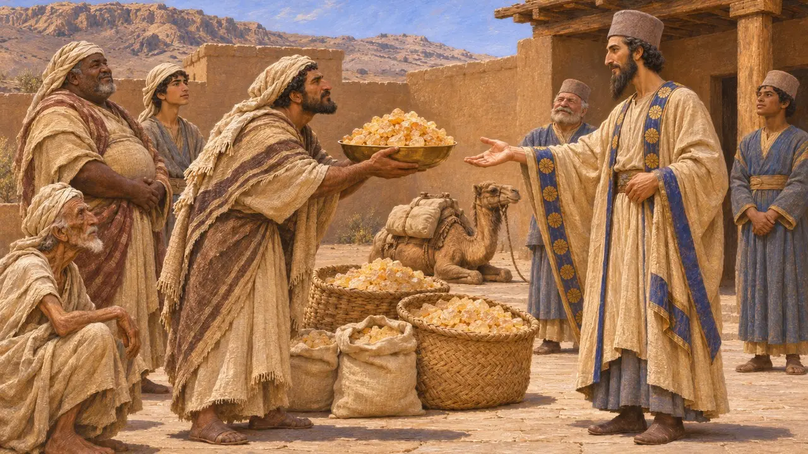
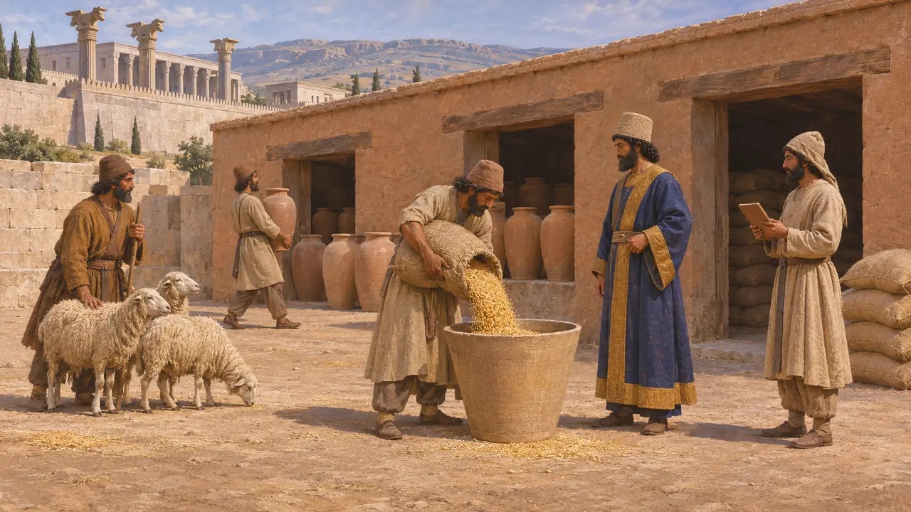
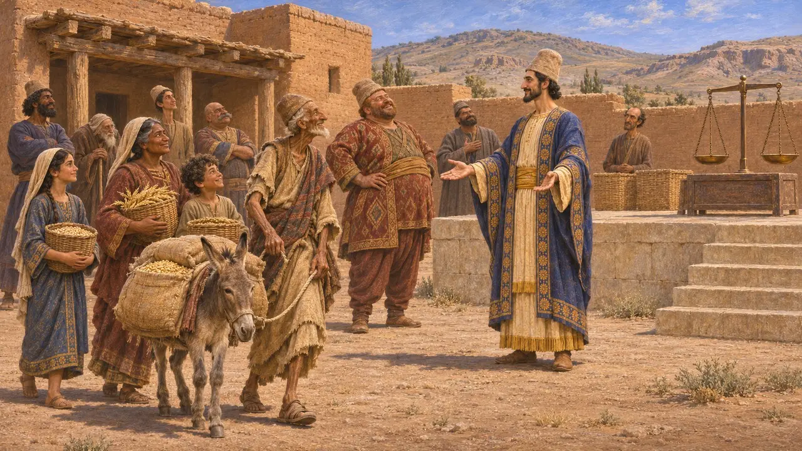
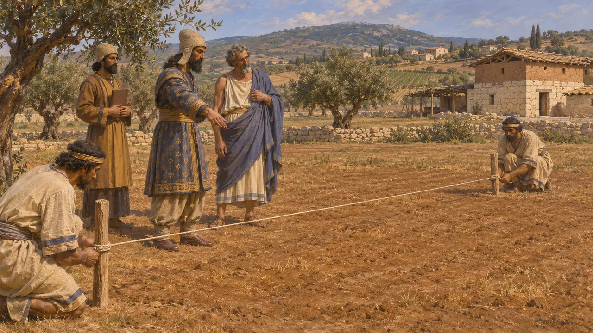

Sgravio fiscale
L'esenzione da tributi e imposte nell'impero achemenide, VI-V secolo a.C.
I re achemenidi riscuotevano tributi dalle loro province e potevano anche esentarne terre e uomini. Erodoto afferma che Dario fu il primo a fissare i tributi di ciascuna provincia. Riferisce che la Perside non pagava tributo e che il Re poteva concedere a un uomo favorito terre esenti da imposte. Condonare le imposte era un atto politico, usato per conquistare la lealtà, ricompensare i servigi o sancire il rango di un popolo.
Nel gioco: Un ordine permanente nella pagina Tasse del registro riduce i tributi dovuti dalla città e accresce ogni mese il favore del Re. Ciò capovolge la storia: la remissione era una concessione del Re stesso, e un funzionario che avesse ridotto il tributo difficilmente ne avrebbe ottenuto il favore.

Dario fissa il tributo
Racconto anticoErodoto racconta che Dario divise l'impero in venti province, che i Persiani chiamavano satrapie, e fissò il tributo che ciascuna doveva versare. La maggior parte pagava in argento, l'India in polvere d'oro. Secondo Erodoto, sotto Ciro e Cambise non c'era stato un tributo fisso, ma solo doni. Poiché Dario mise un prezzo su ogni cosa, i Persiani lo chiamarono mercante, Cambise padrone e Ciro padre.
Herodotus 3.89, 3.94

Doni al posto del tributo
Racconto anticoErodoto indica la Perside come l'unica terra che non pagava tributo. Alcuni popoli ai margini dell'impero, tra cui gli Etiopi oltre l'Egitto, i Colchi e gli Arabi, portavano invece doni, e secondo lui alcuni ne fissavano da sé l'entità. Dice che gli Arabi inviavano ogni anno mille talenti d'incenso. Gli storici moderni leggono questi doni come segno di una posizione particolare presso il Re.
Herodotus 3.97

La Perside e i suoi contributi in natura
ContesoLe tavolette delle Fortificazioni di Persepoli sono per lo più registri elamiti databili tra il 509 e il 493 circa. Mostrano funzionari regi che riscuotevano grano, vino e bestiame in tutta la Perside e nel vicino Elam, e alcune consegne sono registrate come prelievo. Gli storici discutono quindi che cosa intendesse Erodoto con «esente da imposte». Molti ritengono che i Persiani fossero dispensati dal tributo in argento delle province conquistate, ma dovessero comunque contributi in natura e lavoro all'economia regia.
Persepolis Fortification tablets; Briant, From Cyrus to Alexander, 2002

La remissione del 522
ContesoErodoto racconta che l'uomo che regnò come Smerdi nel 522 concesse a tutti i popoli dell'impero tre anni di esenzione dal servizio militare e dal tributo. Aggiunge che dopo la morte di questo sovrano tutti in Asia, tranne i Persiani, ne sentirono la mancanza. L'iscrizione di Dario a Behistun lo chiama Gaumata, un mago e usurpatore, e afferma che Dario restituì i pascoli, le mandrie, i lavoratori e le case che egli aveva confiscato. Gli storici discutono ancora su chi fosse questo sovrano e quali fossero i suoi provvedimenti.
Herodotus 3.67; DB §14

Artaferne ridetermina i tributi della Ionia
Racconto anticoErodoto racconta che dopo la rivolta ionia Artaferne, satrapo di Sardi, fece misurare in parasanghe le terre delle città ioniche e ne fissò il tributo in base a quelle misure. Aggiunge che la nuova stima era all'incirca uguale alla precedente ed era ancora in vigore ai suoi tempi. Secondo questo racconto, un satrapo poteva rivedere il tributo, ma non semplicemente ridurlo.
Herodotus 6.42
Fonti
- Herodotus, Histories 3.89-97
- Herodotus, Histories 3.67, 3.160, 6.42
- Darius, Behistun inscription, DB §14
- P. Briant, From Cyrus to Alexander, 2002
- R. Hallock, Persepolis Fortification Tablets, 1969